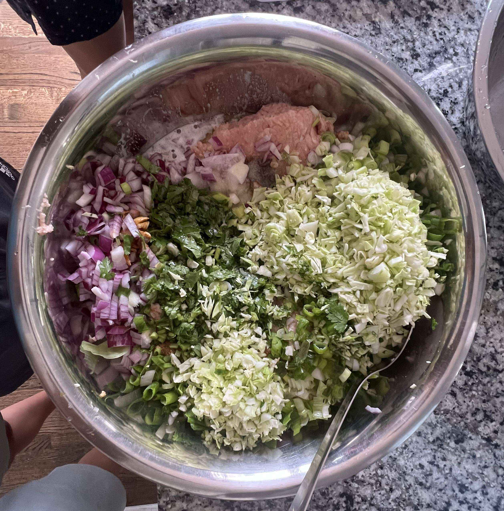
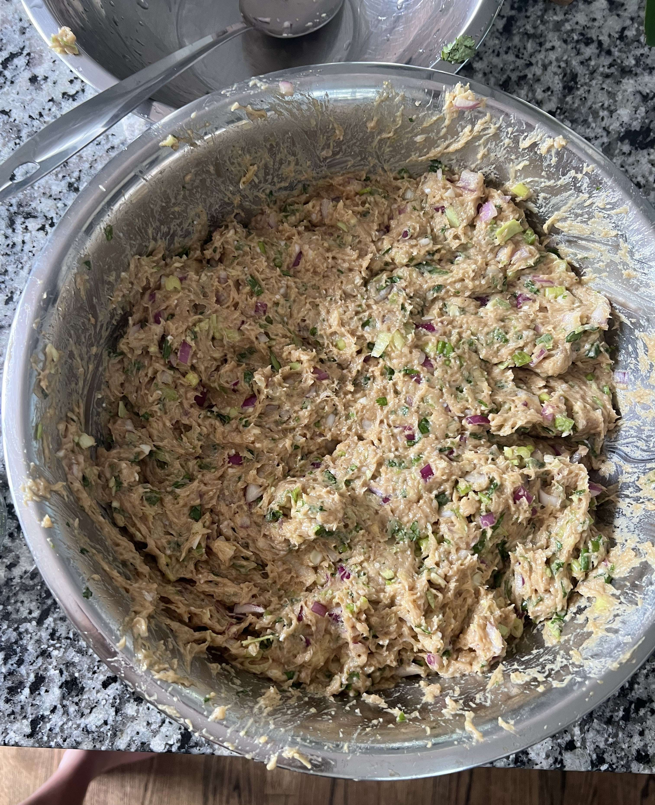
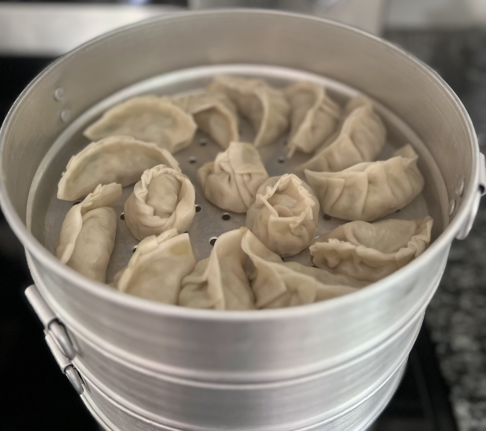
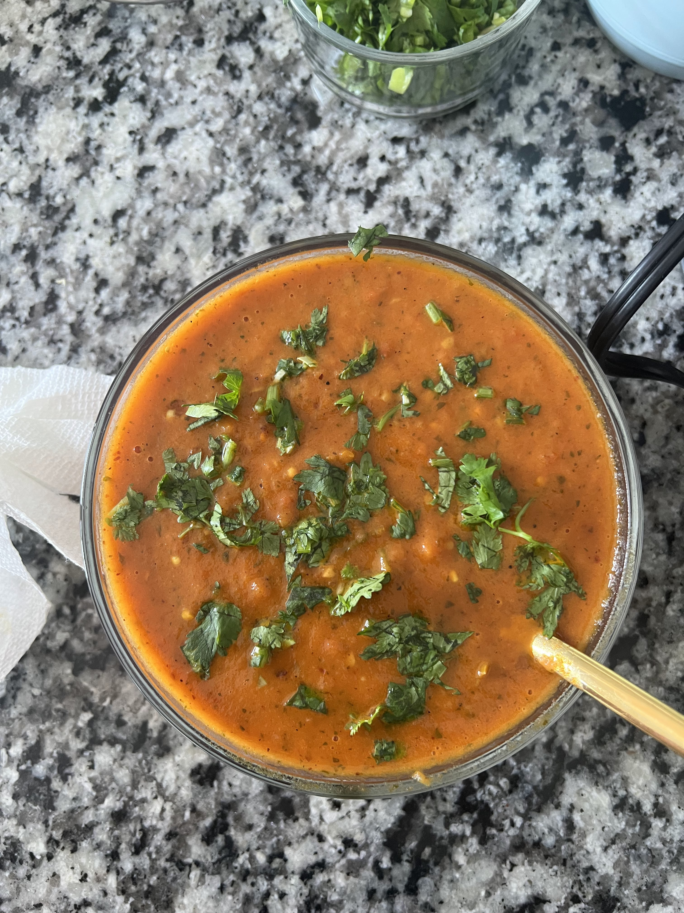
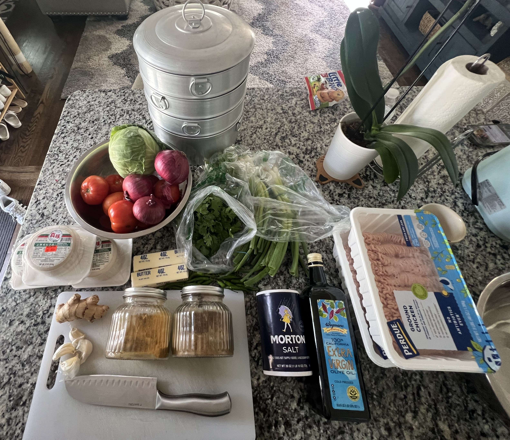
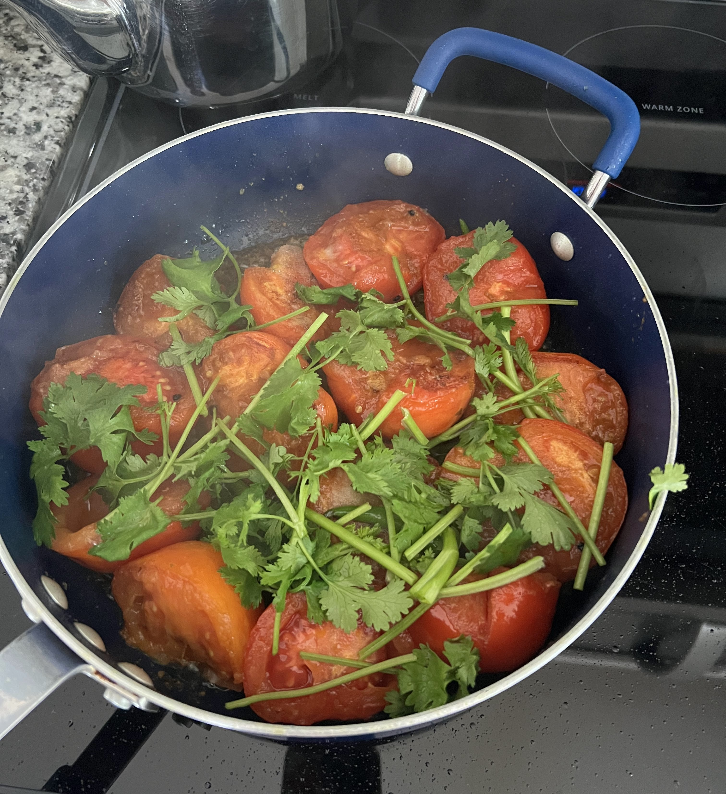
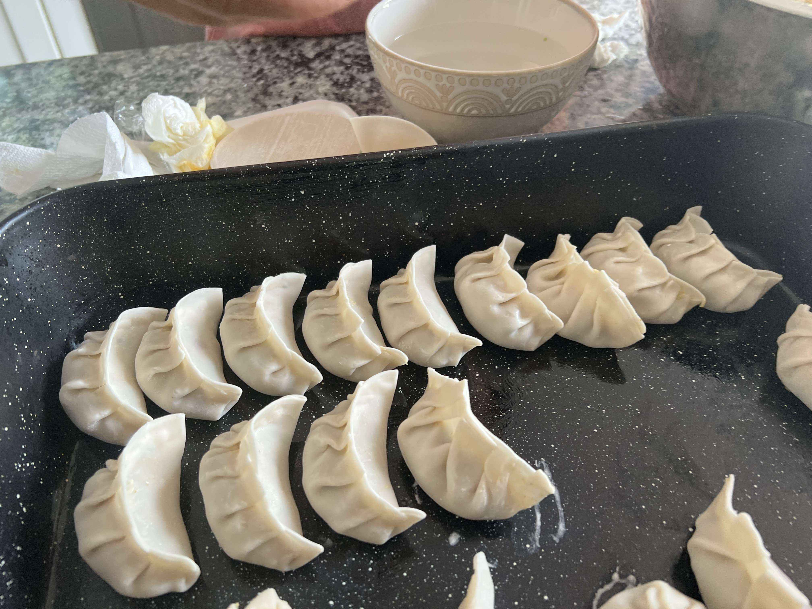

Momo (Nepal)
 10 servings (~100 momo)
10 servings (~100 momo) 1.5 hours
1.5 hours-
 Friend
Friend
 Meat
Meat Spicy
Spicy Salty
Salty Umami
Umami
Cooked on June 26, 2023.
My fifth recipe! Since I have a Nepali friend, they showed me how to make one of the most popular dishes in Nepal, momo! Essentially, momo are dumplings, commonly served with a spicy tomato sauce. We made 175 momo, but this recipe below is scaled down for 100. It’s also a popular street food in Nepal, and can be served for any event!
Rating 9/10. Since I like dumplings in general, this will be a hard dish to beat. Maybe pan-fried momo would be even better.
Preparation
1/4cabbage (finely chopped)3red onions (finely diced)1 handfulof green onions (diced)1 handfulof cilantro (finely chopped)100dumpling wrappers (2 packs of 50)1.5 sticksof unsalted butter (melted with microwave)3 clovesof garlic (minced)3 inchesginger (minced)2.5 tbspsalt4 tbspmeat masala4 tbspcoriander powder3 lbsground meat (chicken)1/4 cupolive oil
In a large bowl, vigorously mix the meat, garlic, ginger, masala, coriander, salt, melted butter, cilantro, green onions, olive oil, and onions until it has a consistent texture. Use gloves if necessary.


It’s time to wrap the momo! For each momo, put a spoonful of just-mixed filling into a dumpling wrap, and dip the fingers into a bowl of water to close the wrap. Make sure that the table has a small coat of flour to prevent sticking. Watch the video below of how to wrap momo! Place each wrapped momo into a nonstick plate.
Steaming
- Steamer pot
- Water
Fill the bottom layer of the pot with water. Heat to a boil.
Steam the Momo in the pot for 15-20 minutes. Place in the pot as the following picture.

Serve with achaar.
Achaar Sauce
1deep non-stick pan5tomatoes1 handfulserrano pepper1 small handfulchopped cilantro1/4 cupcanola oil1 tspturmeric2 tspfenugreek seeds2 tbspsalt
Wash tomatoes and cut into smaller pieces (four pieces each)
Cut the serrano peppers in halves or slit the top.
Heat a deep pan with canola oil. Once heated, add fenugreek seeds and turmeric powder. Splash water to prevent sticking (it will go boom pop!).
Add tomatoes while preventing overlap to allow even cooking.
After cooking for 2 minutes, add serrano pepper to the pan.
Cook for 3 minutes, add salt to the mix.
Cook for 20 min or until consistency becomes like a sauce.

More Content!
Here are some more pictures throughout the process of cooking the Momo. It was fun as I hadn’t wrapped dumplings in maybe 10 years. It was pretty spicy, but manageable, and was very delicious!! I would definitely make this again but maybe try pork or ground beef. I also want to try pan-frying momo or making soup-filled momo.


